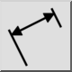
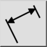
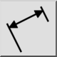
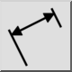

Geroteerd (lineaire)
Werkbalk / icoon:
 

Menu: Bemating > Geroteerd (lineaire)
Sneltoets: D, L
Opdrachten: dimlinear | dimrotated | dl
Dit is een automatische vertaling.
Werkbalk / icoon:
 

Menu: Bemating > Geroteerd (lineaire)
Sneltoets: D, L
Opdrachten: dimlinear | dimrotated | dl
Creëert gedraaide (lineaire) afmetingen. Lineaire afmetingen worden meestal gebruikt om verticale of horizontale afstanden te meten, maar kunnen ook afstanden met elke andere hoek meten.